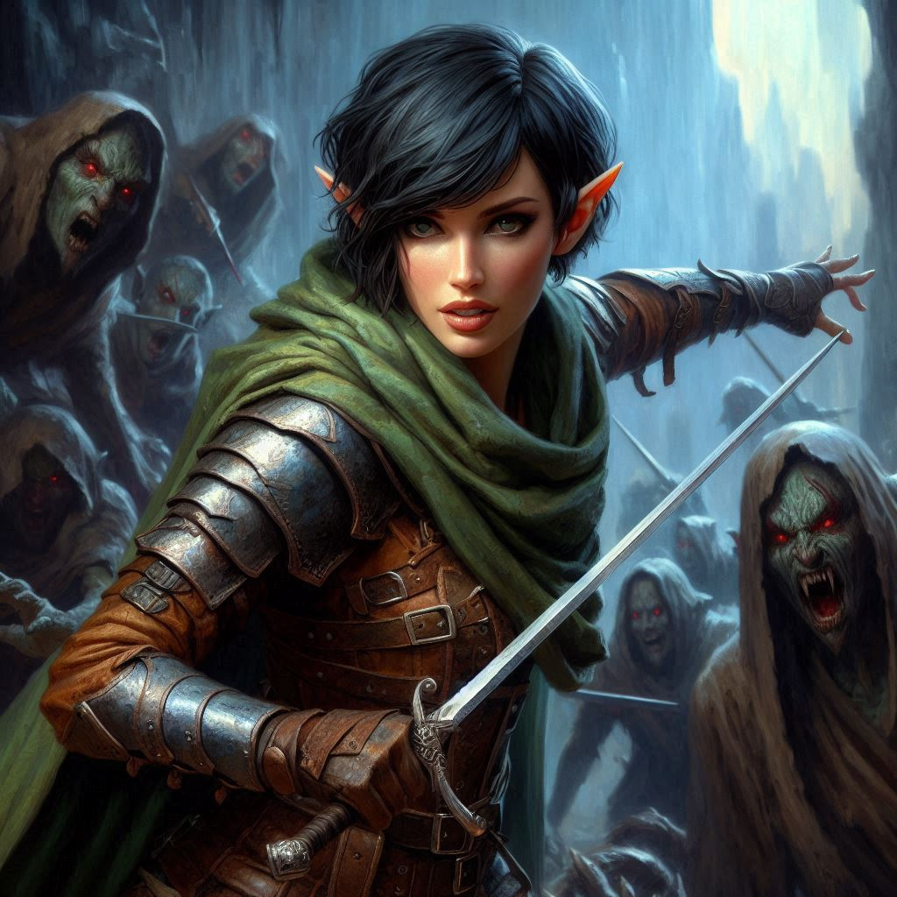
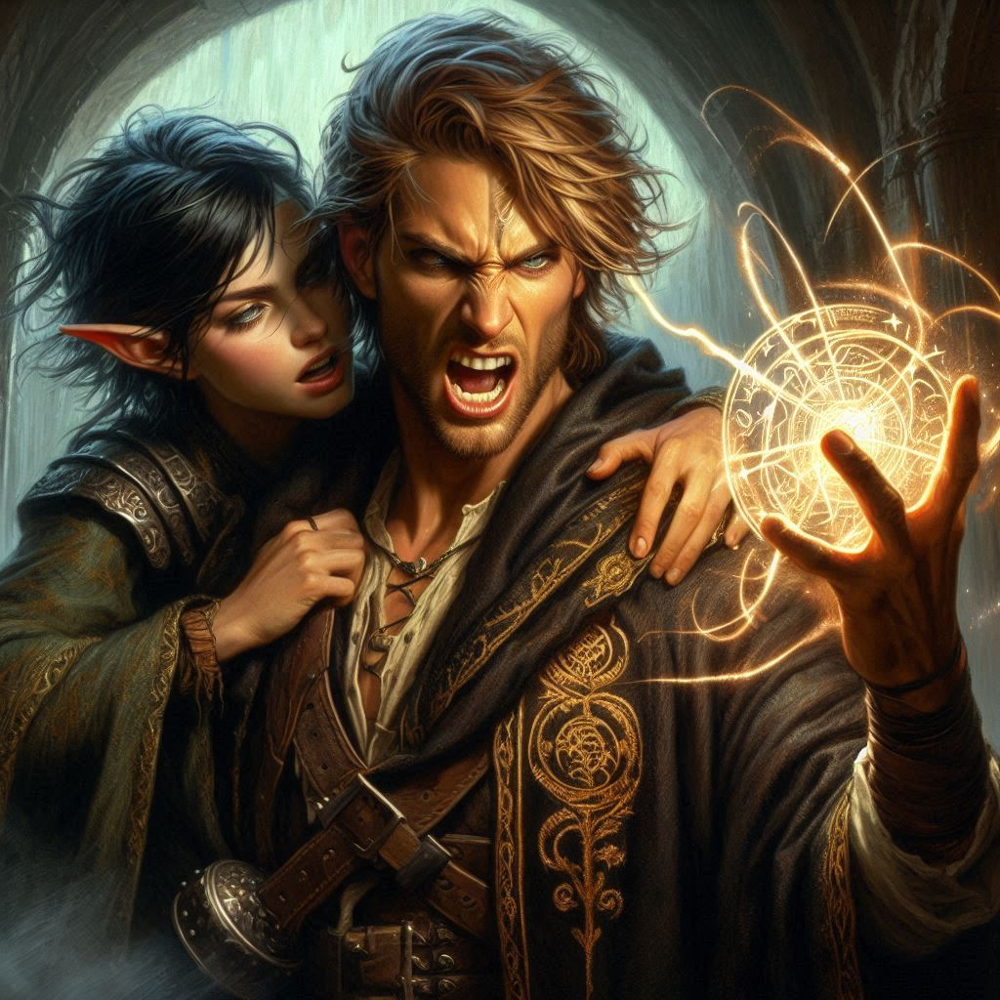

Love Regained
The decision settles in your chest with a pulse of certainty. You take a breath, then sprint forward, leaping through the shimmering, ink-dark portal. The world tilts, warping in a rush of vertigo as colors bleed into midnight hues. Cold seeps into your bones, and the air thickens with the scent of damp stone and something ancient—something wrong. Shadows slither and coil, whispering unintelligible words in a voice like cracking ice.
Your feet slam onto cold, obsidian stone, the impact jarring through your legs. The temple of Umbra’Thal looms in jagged ruin, its colossal pillars stretching into the eternal darkness of the Shadow Realm’s sky. A flash of movement snaps your attention forward. There, locked in a desperate struggle against a swarm of dark elves, Jorsh stands at the altar’s base, his staff sweeping through the air in glowing arcs of defiance. His breaths come ragged, sweat slicking his brow as he parries and evades with the instinct of a cornered wolf.
You don’t hesitate.
Your fingers find the familiar curve of your bow, muscle memory guiding you as you nock an arrow. The taut string hums as you release, the arrow slicing through the air with deadly precision. A dark elf snarls as the projectile slams into his shoulder, spinning him back. The moment of weakness is all you need. You lunge forward, blade flashing as you carve a path through the fray. Each strike is swift, calculated, cutting down your foes before they can fully react. The air hums with the clash of steel and the sharp cries of the fallen.
Jorsh catches sight of you as you reach his side, his dark eyes widening with something between relief and disbelief. “Kira?” he breathes, his voice raw with exhaustion, but there is no time for words.
Side by side, you fight, a rhythm carved from old memories and shared survival. For a fleeting heartbeat, it is as though the years have unraveled, leaving behind only the synchronicity of two souls battling as one. A dark elf lunges—Jorsh deflects the blow, and you drive your dagger into the attacker’s exposed ribs. He staggers back, dissolving into the hungry shadows.
Then the ground quakes.
A pulse of malice thickens the air, making your breath hitch. A new presence enters the battlefield, its arrival seeping into your skin like icewater. The obsidian portal ripples, and through its swirling darkness steps Varis. His long, silver hair catches the dim glow of eldritch light, and his lips curve in a slow, knowing smile. In his grasp, he holds a staff of bone, its gnarled surface crowned with a jagged obsidian crystal that pulses with a sickly crimson glow.
“You should have stayed in the light,” he murmurs, his voice silk wrapped around steel.
Then he raises the staff and begins to chant.
The words slither through the air, each syllable scraping against your mind like claws on stone. A sudden, crushing force grips your limbs, dragging you to your knees. The shadows around you swell and twist, forming grotesque figures with elongated limbs and hollow, soulless eyes. The servants of Yaldaboath.
“Stop him!” Jorsh shouts, voice strained as he struggles against the unseen force. But Varis extends a single hand, and the shadows surge forward, wrapping around you both like iron chains. Your strength drains as the darkness seeps into your skin, the cold consuming, devouring.
You turn your head, fighting against the weight pinning you down. Jorsh meets your gaze, his face pale, his body trembling beneath the oppressive force. He stretches his fingers toward you, a silent plea breaking through his pain.
“Help me, Kira,” he whispers, the words almost lost to the storm of magic around you.
Something in you snaps.
You force yourself forward, inch by agonizing inch, until your fingers clasp his. The moment your hands meet, warmth surges through you—a spark igniting a blaze. Images flood your mind: laughter beneath starlit trees, whispered dreams of adventure, stolen moments before everything fell apart. The bond you thought shattered flares to life, burning away the encroaching shadows.
Light erupts from Jorsh’s chest, golden and blinding. It radiates outward, shattering the dark tendrils ensnaring you both. The force of it slams into Varis, cutting his chant short. He lets out a strangled cry as the obsidian crystal in his staff fractures, splitting with a resounding crack.
The light surges like a tidal wave, consuming the temple in its purging glow. The dark elves scream as they dissolve into nothingness, their twisted forms unraveling like smoke. Even Yaldaboath’s presence recoils, dragged back into the abyss from which it came.
Varis stares at you, his expression twisting from fury to fear as his body begins to disintegrate, piece by piece, into glowing embers. He tries to speak, but no sound escapes before he is gone—erased, as though he had never existed.
Then the temple begins to collapse.
Cracks spiderweb through the stone, and the ground trembles violently beneath your feet. You grab Jorsh’s hand, both of you staggering upright, battered but unbroken. The ancient structure is falling apart, the very fabric of this realm unraveling around you.
Jorsh looks at you, something raw and unguarded in his gaze. A new understanding, a fragile hope. He nods, his fingers tightening around yours.
“Let’s go,” he says, voice steady despite the chaos.
Together, you run, sprinting toward the fading portal as the temple crumbles behind you, the Shadow Realm collapsing into itself. Whatever comes next is uncertain, but for the first time in a long time, you are not running alone.